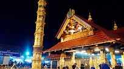

Sabarimala

Sabarimala is situated 72 km from Pathanamthitta town, 191 km from Thiruvananthapuram and 210 km from Kochi. It is
the ‘Sacred Abode of Lord Ayyappa’ and one of the most important Hindu pilgrim centre in the country.The traditional
route to Sabarimala is from Erumeli (40 km.). Other routes are from Vandiperiyar, Uppupara and Chalakkayam via
Plappally. These routes are famous for these scenic splendour and mythological value. Sabarimala The holy shrine is
located amidst dense forests in the rugged terrains of Western Ghats. Inhabited by various wildlife species.
Millions of pilgrims from all over the Country assemble here during the most arduous festivals called as ‘Vishu
Vilakku’ in April, ‘Mandalapooja’, in the months of Vrichikam Dhanu (Nov. – Dec) and ‘Makaravilakku’ in mid January,
coinciding with Sankramam.
Gavi

Gavi is an Eco-Tourism a project of the Kerala Forest Development Corporation located in Pathanamthitta district,
Kerala. Gavi, located in Pathanamthitta district offers its visitors activities like trekking, wildlife watching,
outdoor camping in specially built tents, and night safaris. Distance from Pathanamthitta To Gavi is 109 km 428 mtrs
& Travel Time is 2 hour 5 mins By Road. Gavi is 14 km south west of Vandiperiyar, 28 km from Kumily, near Thekkady.
Gavi is inside the Ranni reserve forest. Gavi is a part of Seethathode Panchayath in Ranni Taluk. Gavi is part of
the Periyar Tiger Reserve, and the route can be covered by car from Vandiperiyar. The entrance fee is 25 rupees per
person and 50 rupees per vehicle. Cameras are 25 rupees and video cameras are charged 100 rupees. Both day and night
stays are available. Forest tent camping is available from November through March.[citation needed]. It has been
said that most enjoyable route to Gavi is the way from Pathanamthitta. The rough journey to Gavi may better be made
on a sturdy vehicle like a jeep. Entry passes must be obtained from the Forest Check Post en route at Vallakkadavu.
Advance booking with the Kerala Forest Development Corporation Ltd. is highly appreciable wherein such formalities
will be taken care of by the company itself.